Calendar Photo
Lab


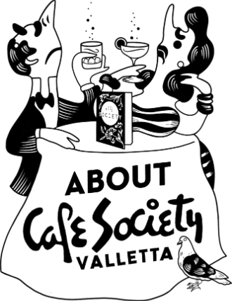
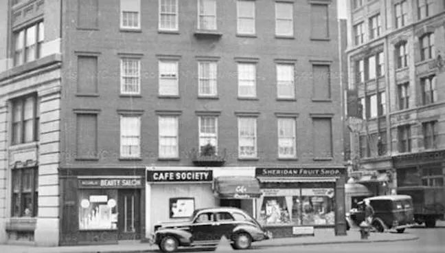
Our namesake was a nightclub that opened in Greenwich Village in New York in the 1930’s. It was a club like no other. It was the first club in all of the US to openly allow entry to both black and white customers and to treat (and pay) musicians, performers, and service staff of any race as equals. At the time, other popular jazz clubs hired black jazz musicians, but still enforced segregation and paid black musicians less than their white counterparts. Black customers were unwelcome altogether.
This new, inclusive Manhattan nightclub was opened by a shoe salesman named Barney Josephson, a lover of jazz who had a knack for discovering talent and who had a norm-defying, out-of-the-box way of thinking that helped spark the cultural shift of a generation towards racial equality in the years after de-segregation laws were passed in the country.
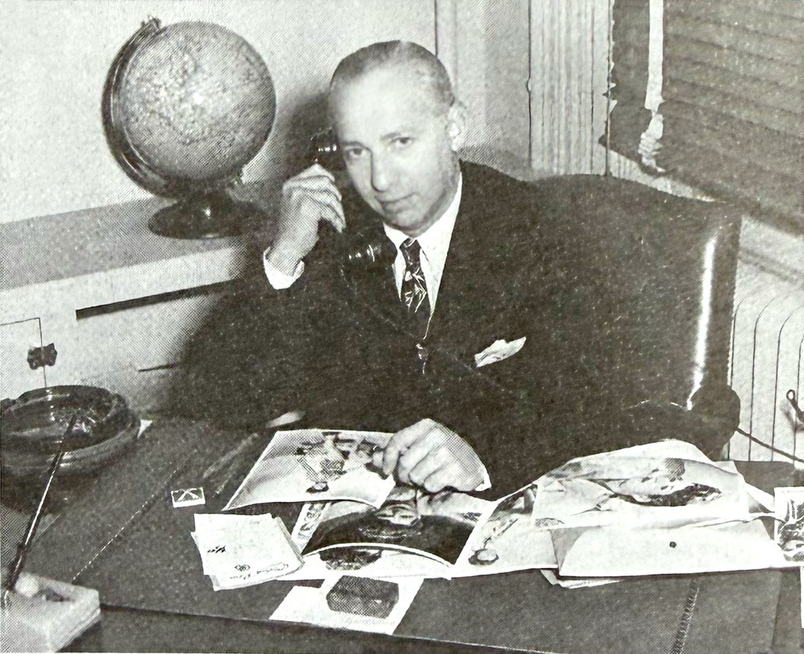
Barney was inspired by the political cabarets of Europe, and he commissioned local emerging artists from the Village to paint the walls with murals of whatever they chose, and he paid them in free bar tabs. He rebuffed industry-wide practices that took advantage of workers by putting his staff on contracts and giving musicians and performers months- or years-long residencies.
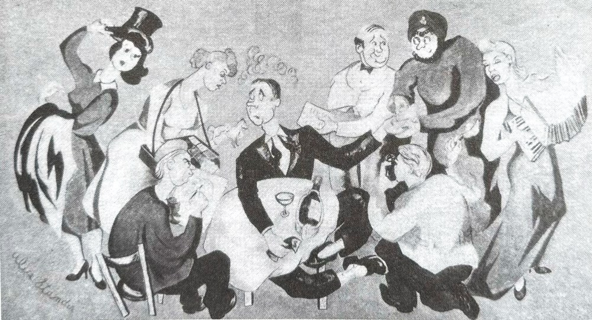
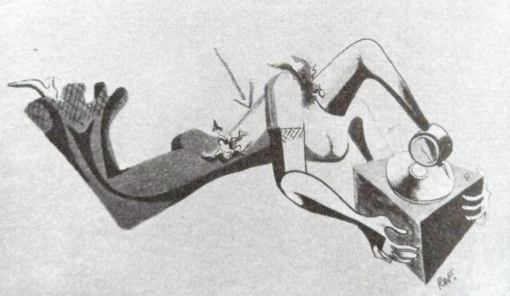
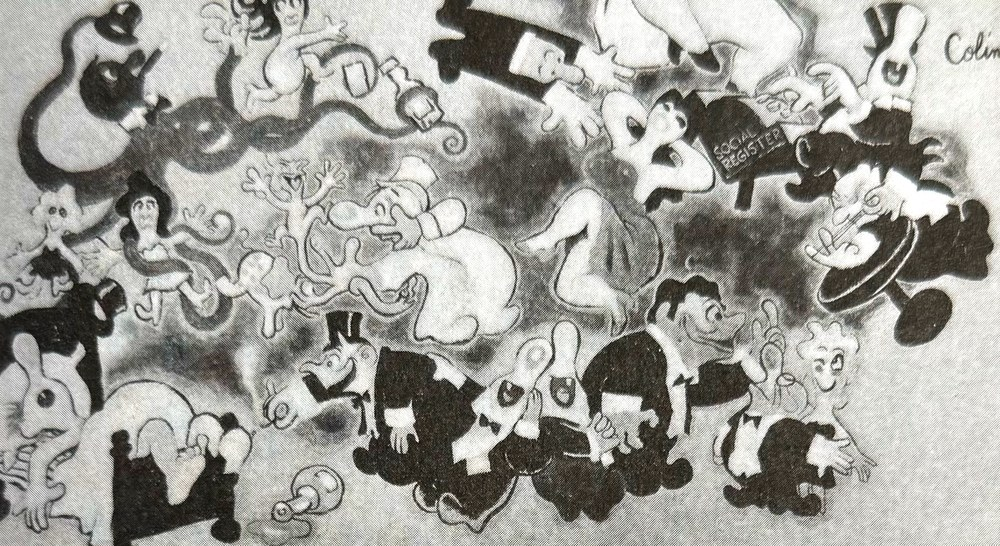
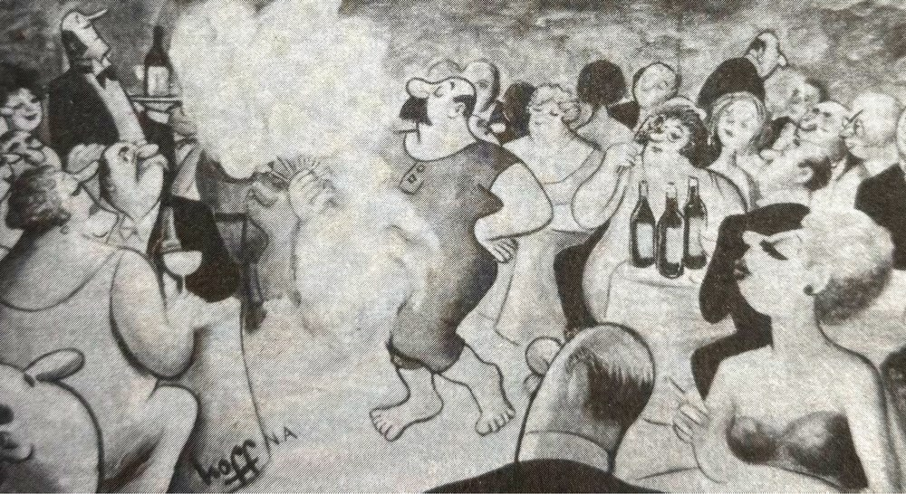
He named the bar “Cafe Society”—a nickname given to the snobby upper class of Manhattan by a popular gossip columnist of the day—and he added the cheeky tagline: ‘the wrong place for the Right people’, with the intentionally placed capital ‘R’ being a nod towards the jazz club’s political leanings.
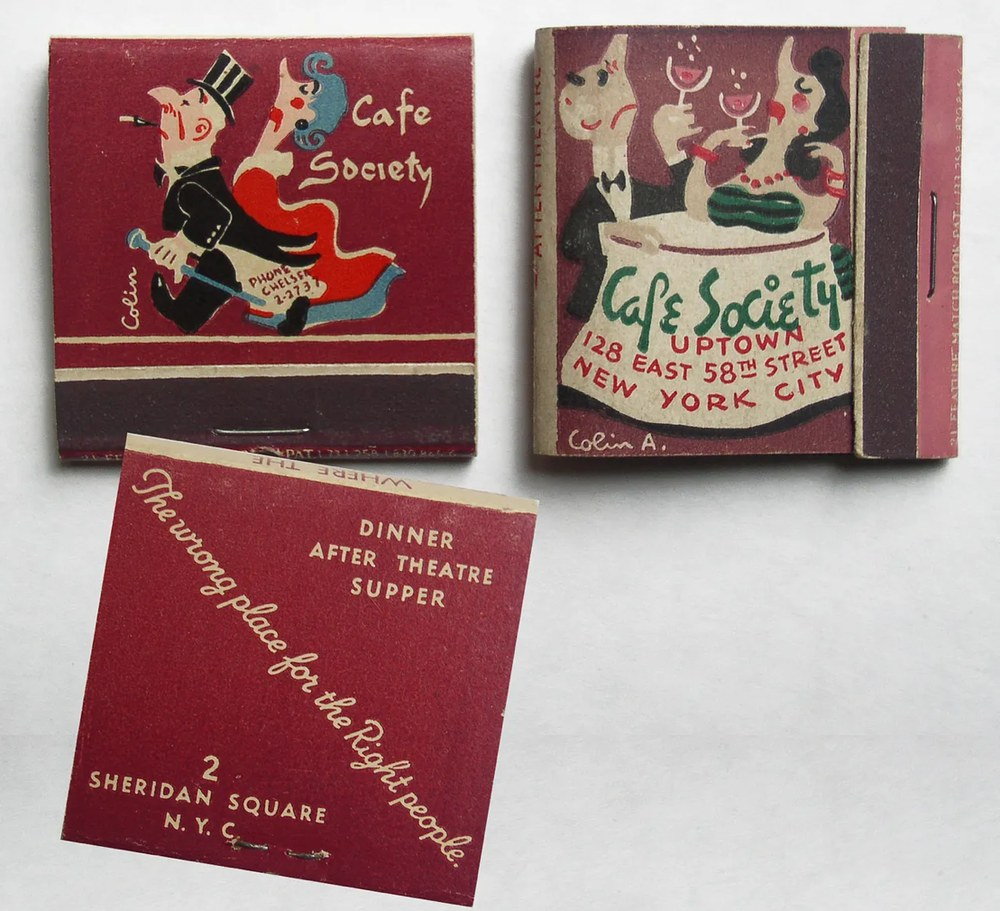
It changed the landscape of nightlife in New York City in more ways than its inclusive policies. The club’s daily opening comedy acts (with a comedian employed on a contract basis) remained fresh and delivered consistently new material by giving humorous takes on the day’s news events—the format still followed today by late-night talk shows.
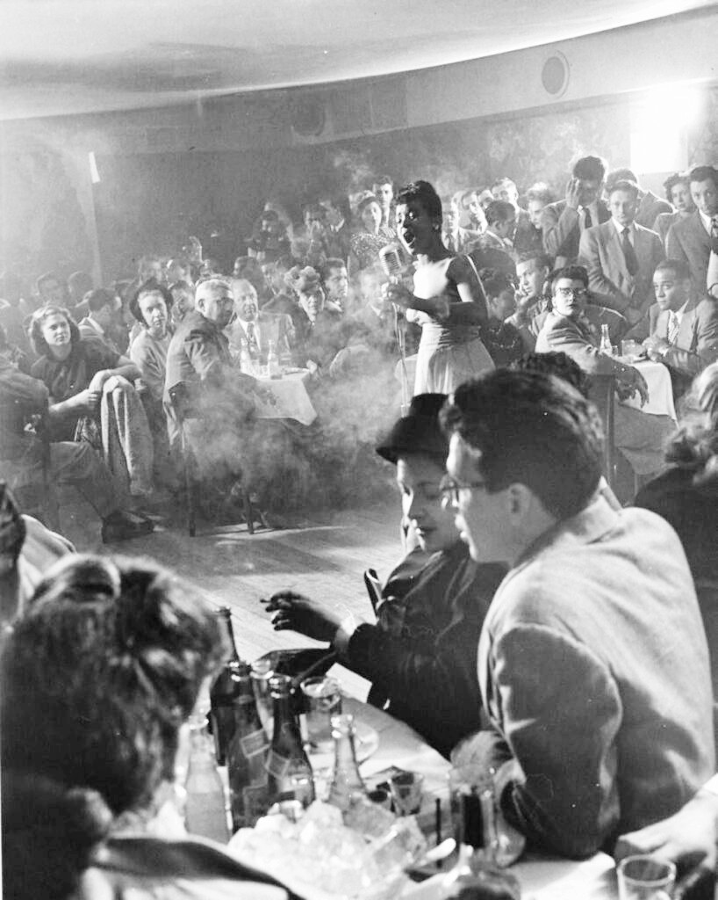
It was the incubator of countless jazz icons. One of these legends, plucked from obscurity to a full-time contract at Cafe Society, was Billie Holiday. Her famous song Strange Fruit—a controversial ballad about the violent lynchings in the American South—was written specifically for the nightly closing number at Cafe Society and, at Barney’s insistence, it was performed with all service stopped, staff frozen in place, the house lights dimmed, and only a single spotlight shining down on Holiday’s face. She sang the haunting lyrics, finished, and left the stage in silence. She did this night after night, and it became a powerful force in the push for anti-lynching laws to be passed.
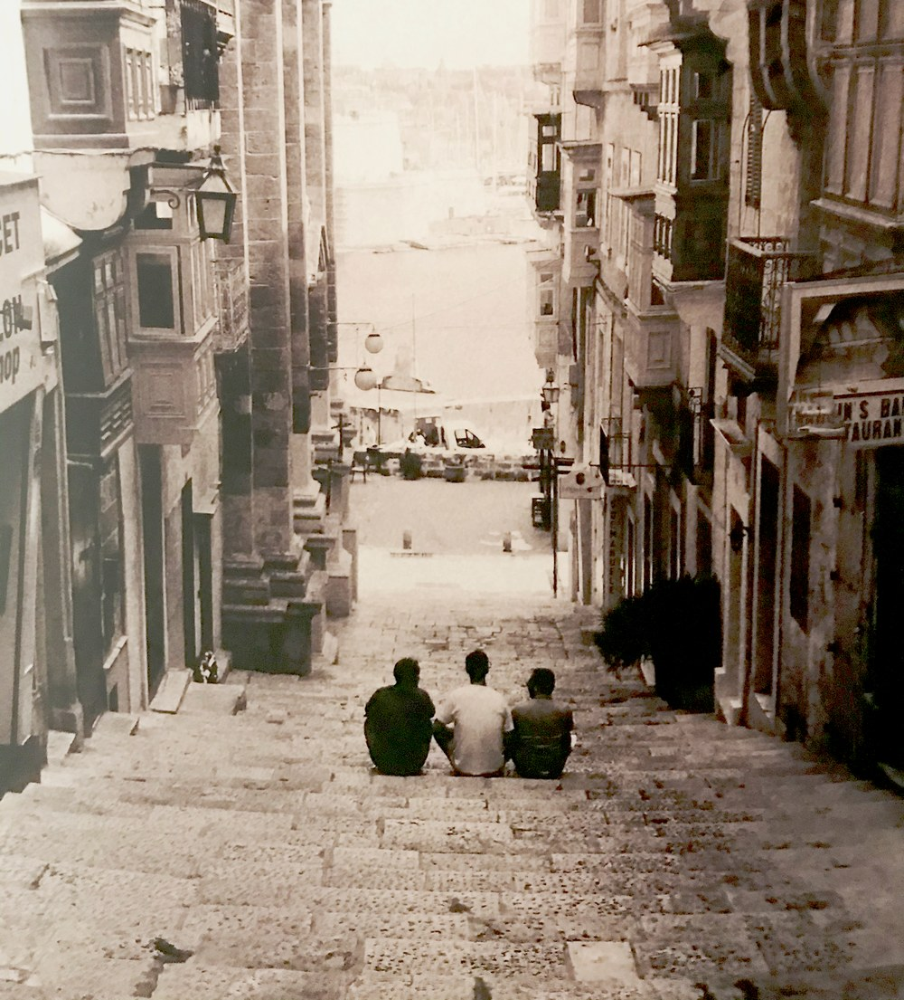
On 1 August 2015, nearly a century later, on the other side of the world in Malta, three DJs opened Cafe Society Valletta. Mike Carbone, Tom Devenish, and Alex Zicotron, who had a passion for community-building and innovative thinking, built a bar as a passion project--a place to foster creativity and play good music.
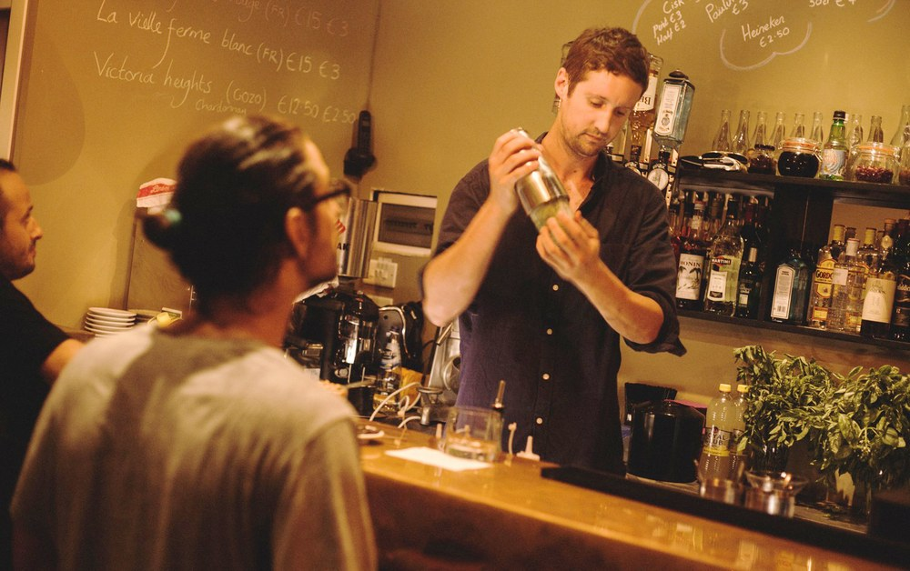
Jake Page, a seasoned bar pro, joined the team in 2019, and led the increasingly popular bar successfully through the challenges of COVID lockdowns and restrictions.
Soon after reopening, he took over the business from the founders and began to build out the space and train a bar team to the level of hospitality he felt Malta needed and had the potential for.
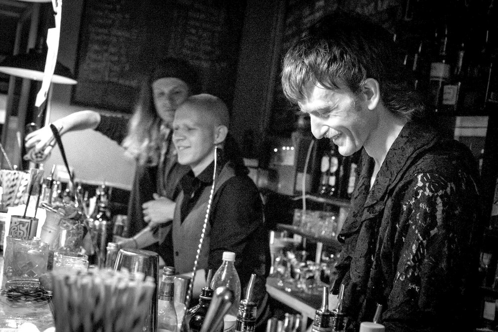
Jake officially signed the lease and took over the business on 1 May 2022, following a negotiation with his former employers after a disagreement about the permanent status of the rainbow flag over St John’s Street. His decision to fly the rainbow flag made it one of the first bars in Malta to be openly LGBTQ+ inclusive, and it was considered to be a risky business decision.
But just like Barney Josephson, we have a vision for creating "third places" where all are welcome, and can check their judgement and their societal norms at the door and meet each other on common ground and in good spirits. Our mission, in part, is to pave the way for there to be more safe spaces like this in Malta. Like our predecessor, we are persistently pushing culture in the direction of tolerance and diversity.
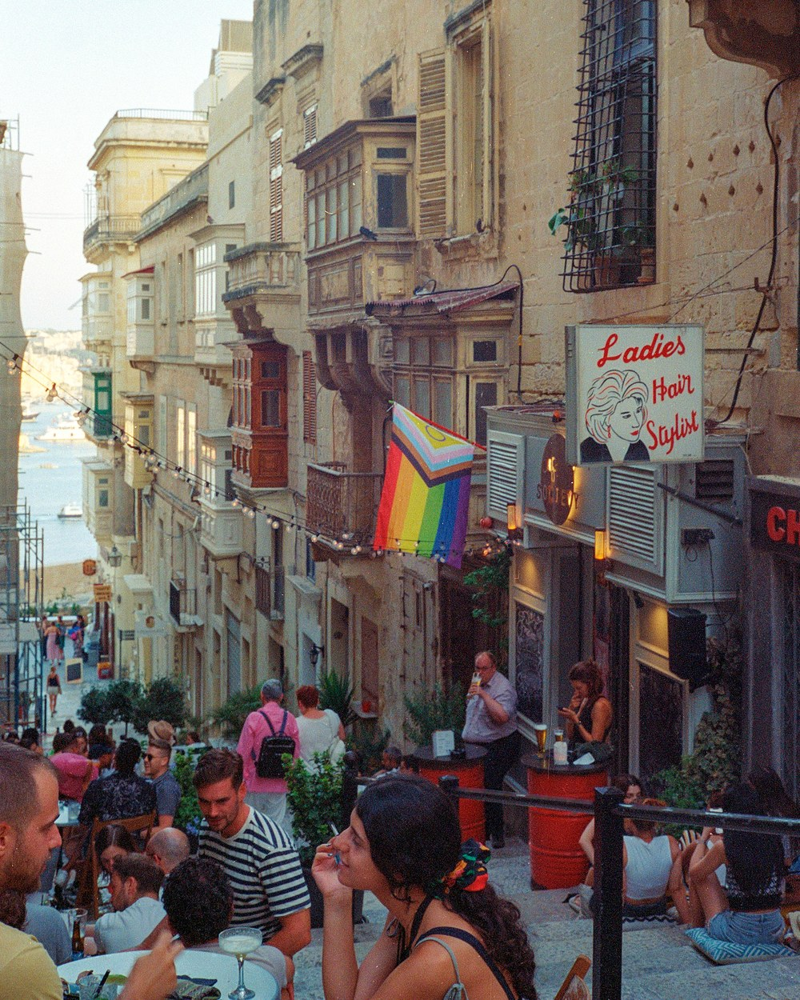
With initiatives like Lost Souls Club, we are also working to build a community of passionate hospitality professionals, with a goal of cooperation, collaboration, and a joint vision of Valletta’s cultural potential, and the future of the industry in Malta as a whole.
Four years after Jake took over Cafe Society, on 1 May 2026, Sofian Morariu bought in and joined him as business partner and the bar's music director. In that same year, Sofian co-founded 77 Cellar, an electronic music party series focused on community-building and creating an immersive musical experience.
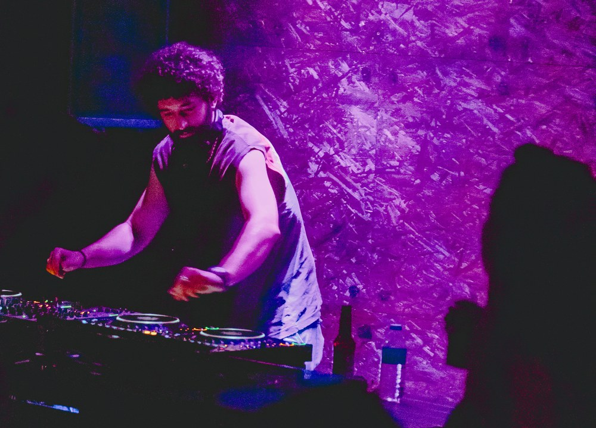
Jake’s father in the US handcrafts the iconic Cafe Society Aprons that are awarded to the most trusted senior bartenders—hospitality rockstars who have proved their knowledge, skill, and passion both behind the bar and in every other position, and who show the problem-solving and quick thinking to navigate any situation thrown at them.
Head bartender Ilgen Akyuz currently leads the Apron bar team-- a team that has built a reputation for creating an authentic and inclusive vibe, pumping out world class cocktails, and delivering creative and bespoke hospitality.
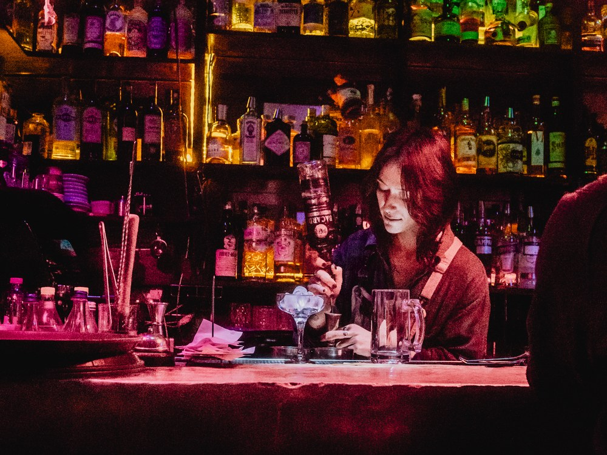
Welcome to the wrong place for the Right people
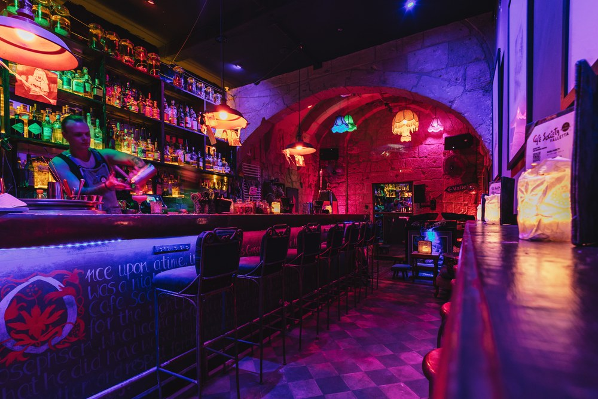